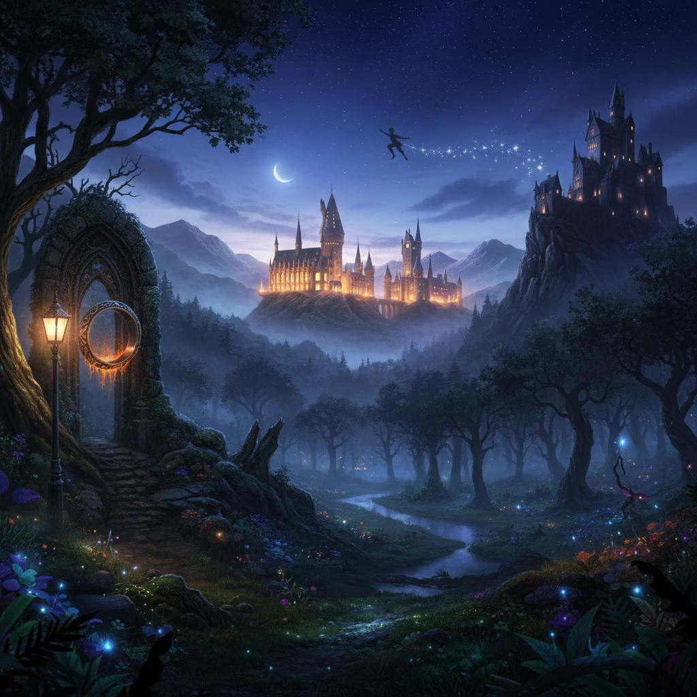

¿Qué son las Obras Literarias Fantásticas y cuáles son sus características?
Las Obras literarias fantásticas son aquellas que nos transportan a mundos imaginarios llenos de magia, criaturas increíbles y situaciones que no ocurren en la vida real. Estas historias nos permiten soñar, explorar lo desconocido y dejar volar nuestra imaginación.